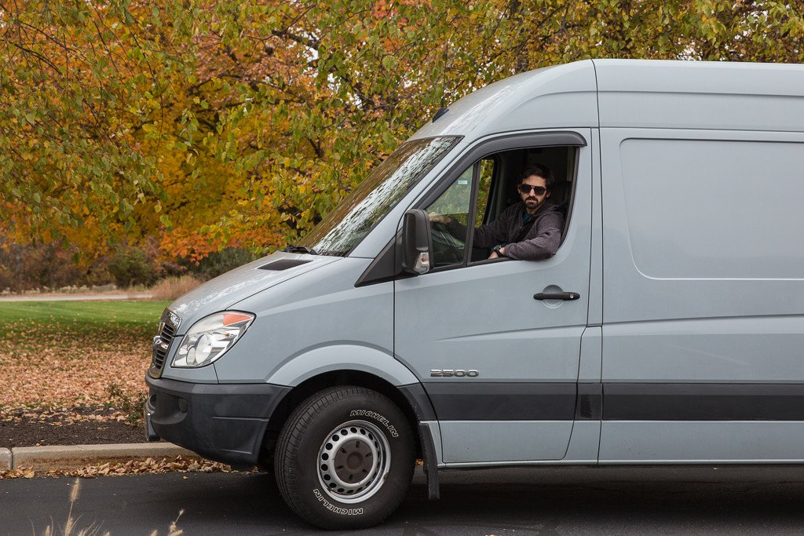

After sorting through vehicle options and deciding that a Sprinter Van would be our best fit, I began the daunting task of actually finding one within our price range. I started scouring the internet at the beginning of August, hoping to find something by the end of September at the latest. Everyone I know that's done something like this before told me I should start looking early and I should've listened. It was mid-October before I finally stumbled upon a solid lead on a 2008 Dodge Sprinter Van with a 170″ wheelbase.

I found the van listed on Sprinter Source for a little more than what I wanted to spend, but it was already built out and had just hit 80,000 miles on the odometer. I know that might sound like a lot for a regular car, but usually Sprinter Vans aren't fully broken in until around the 80,000-100,000 mile mark and their engines are tough. With regular maintenance these engines can keep a van rolling for 500,000 miles.
After a few phone calls with the seller, we came to an agreement on a price. It was a Thursday morning and within hours I had mine and Adam's airline tickets booked, a cashier's check printed for Jack (the seller), temporary vehicle insurance, and a temporary tag. It was finally happening: Adam and I were flying from Orlando, Florida to Providence, Rhode Island to buy a Sprinter Van, sight unseen, from someone I had only spoken to over the phone a hand full of times.
Saturday morning at 4:00 am we were up…sort of. We kind of slept through our alarms and ended up leaving for the airport a little later than expected. Our mom got us to the OIA with enough time for us to say "see ya later" and "love you" to her and the dog before walking through TSA Pre-Check and to our gate, right after a breakfast stop at Wendy's. I wanted Qdoba, but neither of us wanted to risk a gastric emergency in the coach bathroom of the airplane.
For me, it felt like an eternity flying from Orlando, switching planes in Charlotte, and then onward to Providence. I'm the one on the hook for all of this. I'm the one who came up with this whole "live in a van for an entire year" idea, the one who did all the research on Sprinter Vans, the one who called dozens of sellers, and the one who found this Sprinter Van and had handled all the communication with Jack up to this point. If anything went wrong, it was on me and my nervous foot tapping was going all morning. All the while, Adam was sleeping next to me on the planes, cool as a cucumber, wondering why I was so nervous.
We walked out of the airport and there it was, our future home on wheels was sitting at the curb waiting for us. We were so anxious to check out our soon-to-be new van and meet Jack that we jumped in at the wrong spot. Apparently we jumped in five feet too early and held up traffic, or at least that's what the cop directing traffic yelled at us.
The Sprinter Van community's small and unique. It's kind of like a brotherhood and when we met Jack for the first time, it was kind of like talking to a friend you haven't seen in forever. He told us war stories, work stories, some family stories, and told us where he and his wife had taken the van they had built out in 2009.
It took Jack a while to finally decide on a Sprinter Van as the perfect vehicle for he and his wife to camp in and see the country. Dodge and Mercedes made a change to the design of the Sprinter Van in 2007 and just like what our dad says, Jack said "You can't buy the first model. The first one always has problems and issues that need to get worked out. You always buy the second model of whatever it is you're buying." And that's why he went with a 2008. Jack and his wife were the first owners of the van and they built it out as a camper van to suit their living needs as they took it across the country.
We got to Jack's house and he gave us the full tour of his van. How he ran through the electrical, storage space, interior lights, cruise control, backup camera, everything. He covered every square inch of the van with us. Jack's a stand up guy that wanted us to know what we were getting and we both respect him for that.
His wife had prepared a sandwich lunch for us, we got to know them a little better, and we even added a few destinations to The Bro'd Trip after hearing some of their stories. It came time to sign the title transfer, hand over the cashier's check, and switch the license plates. As we were driving away from their house I had a sense of pride, along with terror. I was proud that Adam and I got to keep the legacy of this Sprinter Van going as a conversion van, as it should be. Oh and the terror I was feeling? I think everyone would be a little terrified sitting behind the wheel of a behemoth of a vehicle having never really driven anything that size before, facing a 22 hour drive, after having spent a lot of the money you had saved over the past two years.
Fall's beautiful in the northeast and the long drive ahead wasn't going anywhere. We pulled over to snap a few pictures of the autumn trees with the grey sky as a background. Walking around taking photos and videos, the two of us couldn't help but think that this was going to be our lives in just a couple months.
We drove into Connecticut with no problem and then came New York. We hit the Bronx traffic and were at a stand still for hours. If you want to get comfortable driving any vehicle in a short period of time, drive it through New York and New Jersey and you'll feel like you can take on any highway in any traffic. I used to think that the wide open interstate in the middle of nowhere was boring and by the time I drove us into Maryland I was counting down the miles until I95 was out of the major metropolis cities.
After 12 hours of driving with only one stop for food and our first diesel fuel-up, I had to get some rest. I'm a terrible older brother and gave Adam the graveyard shift. He took over at 2:00 am and we had decided six hours earlier that it didn't make sense to grab a hotel for the night. We'd just push through, get home earlier than expected, and get to bed earlier on Sunday night.
Right before the sun started coming up I woke up from my slumber to hear Adam utter "Good you're awake. We need to switch." Even after trying to sing along to every song that came up on Pandora the poor kid was having a hard time staying awake, and I don't blame him. The graveyard shift sucks! We pulled over to switch drivers and I was back behind the steering wheel.
It wasn't until we were back in Florida in broad daylight that Adam woke up and had his freak out moment. When he woke up it finally hit him that this is it, it's really happening. He was sleeping in the van that's now ours and that we'll be living in for all of 2016.
After 22 hours we were back home in Florida. We rolled into the driveway at 12:00 pm on Sunday and were greeted by our mom, dad, and dog, Max, all smiles that we made it home safely after 22 hours of driving. Driving 22 hours straight is something we're never going to do again, but that was the easy part. Even though it's already built out, it doesn't quite meet our needs. Now comes the hard part…building it out for The Bro'd Trip.